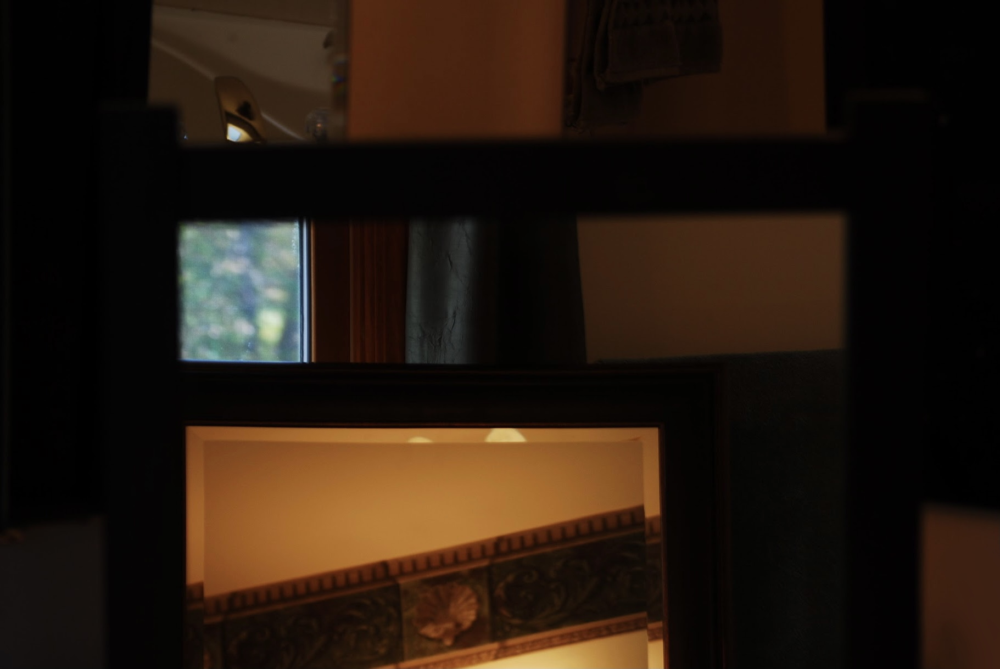

Michael Berliner
Design and Photography
Works
Home
Design
Photography
Contact
1 / 9
2 / 9

3 / 9
4 / 9
5 / 9
6 / 9
7 / 9
8 / 9
9 / 9
❮
❯
Mirrored
Mirrored is a photo series based on body abstraction and mirroring. The goal was to personify the mirror, while juxtaposing this idea with the natural surroundings of these images. As the mirror becomes a character, so does the nature.